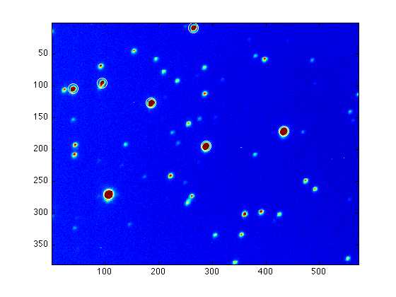

Finding stars
Assuming you have a m-file read_images.m that reads in .fit files and gives you the image im which is bias corrected and flat fielded:
read_images;
Now we can use the function findstars to locate stars in the image im. Let's start with the "minimum value above background" = 500:
findstars('im.out', im, 500, 10);
Source 1: ampl=7542.4, x=106.8, y=270.0 Source 2: ampl=3823.7, x=432.9, y=171.3 Source 3: ampl=2969.4, x=287.9, y=194.5 Source 4: ampl=2246.2, x=186.2, y=126.4 Source 5: ampl=1080.3, x=40.4, y=104.6 Source 6: ampl=1076.2, x=265.3, y=8.3 Source 7: ampl=612.6, x=94.6, y=95.2 Total 7 sources Returning table of: center X, center Y, amplitude, major axis, minor axis, position angle See also file im.out
Obviously, only a few stars are located. Therefore we must run findstars again with lower value of the cutoff value, e.g.
findstars('im.out', im, 300, 10);
Source 1: ampl=7542.4, x=106.8, y=270.0 Source 2: ampl=3823.7, x=432.9, y=171.3 Source 3: ampl=2969.4, x=287.9, y=194.5 Source 4: ampl=2246.2, x=186.2, y=126.4 Source 5: ampl=1080.3, x=40.4, y=104.6 Source 6: ampl=1076.2, x=265.3, y=8.3 Source 7: ampl=612.7, x=94.6, y=95.2 Source 8: ampl=457.0, x=360.2, y=301.3 Source 9: ampl=373.3, x=391.2, y=297.7 Source 10: ampl=331.5, x=44.4, y=192.6 Source 11: ampl=331.9, x=43.1, y=207.8 Source 12: ampl=301.8, x=24.5, y=105.8 Source 13: ampl=345.3, x=222.1, y=241.2 Source 14: ampl=313.2, x=92.1, y=68.6 Source 15: ampl=319.4, x=397.6, y=57.9 Source 16: ampl=298.3, x=286.0, y=112.0 Source 17: ampl=184.7, x=258.4, y=277.4 Source 18: ampl=289.7, x=474.0, y=248.9 Total 18 sources Returning table of: center X, center Y, amplitude, major axis, minor axis, position angle See also file im.out
More stars are found, but there still are many faint stars unidentified. Keep trying different values until you feel like you've included all stars in the image.
The output is also saved in the file im.out; you can use type to see the contents of this file:
type im.out
% X Y Amp Maj Min PA 106.82 269.99 7542.36 6.99 5.22 157.25 432.89 171.25 3823.74 7.06 5.29 156.44 287.88 194.47 2969.39 7.03 5.26 156.17 186.17 126.41 2246.22 7.12 5.30 153.49 40.45 104.62 1080.26 7.00 5.23 156.85 265.35 8.29 1076.21 6.94 5.22 154.95 94.58 95.19 612.66 8.70 5.86 130.28 360.19 301.27 457.04 7.02 5.33 157.32 391.20 297.68 373.25 6.94 5.18 157.61 44.36 192.61 331.46 6.83 5.13 159.83 43.09 207.82 331.86 6.82 5.29 163.21 24.54 105.75 301.79 7.16 5.28 163.39 222.13 241.19 345.27 7.02 5.18 157.06 92.08 68.64 313.16 6.93 5.13 156.23 397.59 57.85 319.44 6.91 5.25 158.90 285.99 112.01 298.32 6.92 5.23 156.65 258.42 277.40 184.70 19.97 5.88 127.53 474.00 248.93 289.68 6.97 5.21 159.39